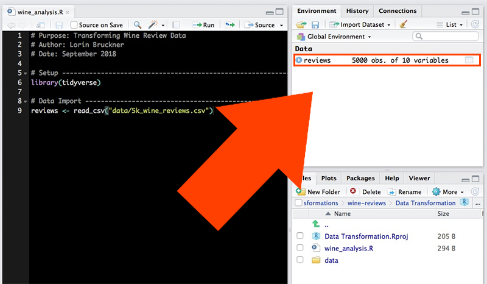
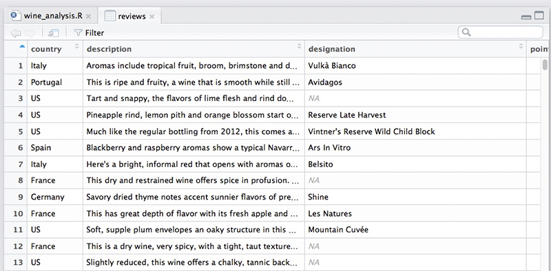
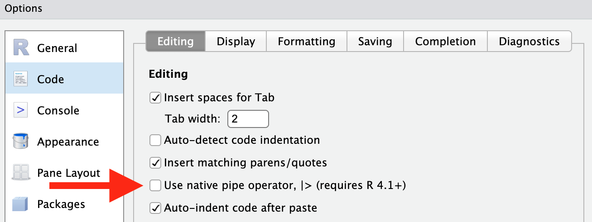
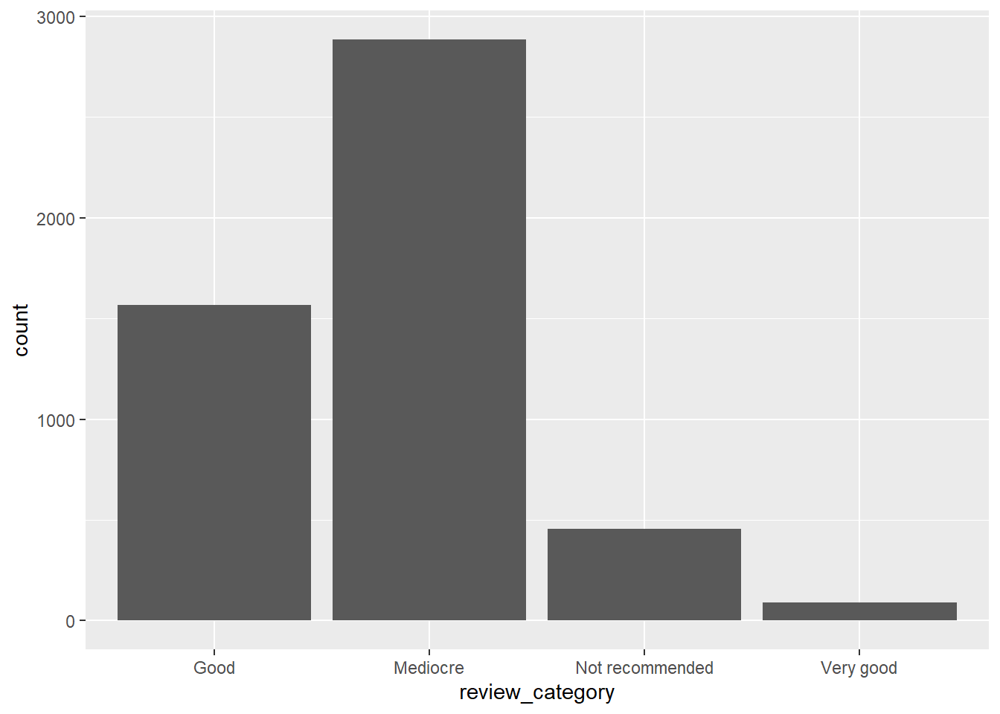
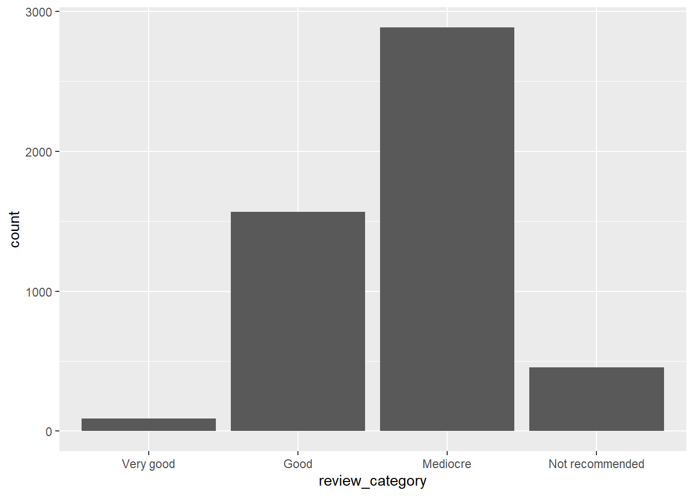

# Purpose: Transforming Wine Review Data
# Author: Nuvan Rathnayaka
# Date: January 2019
# Setup -----------------------------------------------------------
library(tidyverse)beginR: Data Transformations, Strings, and Factors
Data and other downloads
Today
This workshop aims to cover:
- Starting a New Project
- Creating directories (folders) and sub directories
- Loading the tidyverse
- Importing Data
- Data Transformations
- Filtering Data
- Relational and Assignment Operators
- Reordering Data (arrange)
- Selecting Data
- Renaming Columns
- Adding new Variables (mutate)
- Summerising Data
- Strings and Factors
- Combining and Subsetting Strings
- Regular Expressions
- Creating Factors
- Altering Factors
Start a New Project in R
It is best practice to set up a new directory each time we start a new project in R. To do so, complete the following steps:
- Go to File > New Project > New Directory > New Project.
- Type in a name for your directory and click Browse. Be sure to pick a place for your directory that you will be able to find later.
- Go to Finder on Mac or File Explorer on PC and find the directory you just created.
- Inside your project directory, create a new folder called data.
- Download or copy the data file (5k_wine_reviews.csv) into the data folder.
- Go to File > Save As to give your R script a name and save it in your project directory.
Loading the tidyverse
The first few lines of our R script are made up of comments to document the script’s purpose, creator and date. Next, we use the library() function to load any packages that our script will need to run. In this workshop, we are using the tidyverse package for all of our projects.
Importing Data
We use the read_csv() function to import our data.
# Data Import ------------------------------------------------------
reviews <- read_csv("data/5k_wine_reviews.csv")When we use read_csv(), our data is stored as a type of object in R called a data frame. One of the nice things about data frames is that we can see a visual representation of them using R Studio. Take a look at your Environment tab in the upper right and click on the reviews object you just created.

The data will be represented as a table in a new tab.

Filtering
We have a fairly big data set. What if we want to focus on certain records? For example, let’s say I’m only interested in Chilean wine. I can use the filter() function to only look at wines with “Chile” as their country of origin.
filter(reviews, country == "Chile")# A tibble: 194 × 10
country description designation points review_category price province title
<chr> <chr> <chr> <dbl> <chr> <dbl> <chr> <chr>
1 Chile White flower… Estate 86 Mediocre 15 Colchag… Esta…
2 Chile A berry arom… <NA> 86 Mediocre 9 Maule V… Sund…
3 Chile This is much… Gran Reser… 85 Mediocre 22 Colchag… Casa…
4 Chile Lightly herb… Reserve 85 Mediocre 13 Maipo V… Tres…
5 Chile Caramelized … Special Re… 86 Mediocre 12 Rapel V… Ares…
6 Chile A bright nos… Single Vin… 87 Mediocre 18 Leyda V… Leyd…
7 Chile This blend o… Condesa Re… 91 Good 29 Aconcag… Cond…
8 Chile Dry, briary … 20 Barrels 91 Good 32 Maipo V… Cono…
9 Chile Dry, spicy a… The 7th Ge… 91 Good 20 Loncomi… G7 2…
10 Chile Haven't seen… Unusual Ca… 88 Mediocre 50 Maipo V… Terr…
# ℹ 184 more rows
# ℹ 2 more variables: variety <chr>, winery <chr>When we use the filter() function on our reviews object, it displays the results in our Console tab. However, these results have not been saved, only displayed. If we want to save our results so we can perform additional transformations on them later, we need to assign them to a new data frame. Here, we’ll name the data frame “chilean”.
chilean <- filter(reviews, country == "Chile")Let’s say I also don’t have a lot of money to spend on wine, so I need to limit my data set to wines that cost $20 or less. We should edit our filter to include a condition on price.
chilean <- filter(reviews, country == "Chile", price <= 20)Note that this time we are assigining the results to the same object we used before. This allows us to replace our previous data for that object with new data. Now, if we click on the “chilean” data frame in our Environment tab, we can see our data set has been limited only to wines from Chile that are $20 or less.
Relational and Assignment Operators
Our filter uses some symbols you may not be familiar with, such as == and <=. These are called relational operators. We use a relational operator to check the relationship between the two operands on either side of it.
| Operator | Relationship Check |
|---|---|
> |
Is the left operand greater than the right operand? |
< |
Is the left operand less than the right operand? |
>= |
Is the left operand greater than or equal to the right operand? |
<= |
Is the left operand less than or equal to the right operand? |
== |
Is the left operand equal to the right operand? |
!= |
Is the left operand not equal to the right operand? |
Above, you’ll notice that we use == to check if something is equal. This is different from defining something as equal. To set or assign a value, we use either = or <- instead of ==. For example:
| Use | Meaning |
|---|---|
filter(reviews, country == "Chile") |
Check each review to see if the country is equal to “Chile” |
age = 52 |
Assign the value 52 to a variable called “age” |
data <- survey_results |
Assign the contents of the object called “survey_results” to an object called “data”. |
Reordering Data (arrange)
Let’s arrange the rows of our data frame in a way that’s more informative. This time, we’ll just take a look at the results in our console rather than assigning them to an object.
First, I want to know which wines in my Chilean data set get the highest number of review points. The arrange() function allows us to reorder our data by a particular variable. Below, we’ll reorder by points.
arrange(chilean, points)# A tibble: 154 × 10
country description designation points review_category price province title
<chr> <chr> <chr> <dbl> <chr> <dbl> <chr> <chr>
1 Chile Aromas of pu… Gran Reser… 80 Not recommended 19 Leyda V… Viña…
2 Chile Fluffy, swee… Reserve 80 Not recommended 15 Maule V… Cuev…
3 Chile Jumpy on the… Grand Rese… 81 Not recommended 20 Rapel V… Pura…
4 Chile Crisp but bl… <NA> 81 Not recommended 14 Maipo V… Cous…
5 Chile Flat aromas … Reserva Ca… 81 Not recommended 12 Maule V… Ovej…
6 Chile Funky and od… <NA> 81 Not recommended 10 Central… Arau…
7 Chile Rubbery, mul… <NA> 81 Not recommended 10 Cachapo… Corn…
8 Chile This is edgy… Albamar 81 Not recommended 13 Casabla… Will…
9 Chile Smells veget… Selección 82 Not recommended 15 Maipo V… Viña…
10 Chile Smells perky… Hacienda A… 82 Not recommended 13 Central… Fran…
# ℹ 144 more rows
# ℹ 2 more variables: variety <chr>, winery <chr>Well, that sort of worked. My wines are reordered by points, but in ascending order. To reorder them in descending order, we need to use another function inside the arrange function. As you learned last week, this is called a nested function.
arrange(chilean, desc(points))# A tibble: 154 × 10
country description designation points review_category price province title
<chr> <chr> <chr> <dbl> <chr> <dbl> <chr> <chr>
1 Chile Dry, spicy a… The 7th Ge… 91 Good 20 Loncomi… G7 2…
2 Chile Composed ber… Gran Reser… 90 Good 15 Colchag… Carm…
3 Chile Over the pas… 1865 Singl… 90 Good 19 Leyda V… San …
4 Chile Toasty and v… Gran Reser… 89 Mediocre 18 Maipo V… Tara…
5 Chile This dry-far… Mariposa E… 89 Mediocre 20 Loncomi… Gill…
6 Chile Composed and… Envero Gra… 88 Mediocre 15 Colchag… Apal…
7 Chile Bisquertt us… Casa La Jo… 88 Mediocre 11 Colchag… Viña…
8 Chile Aromas of mi… Reserva de… 88 Mediocre 10 Maipo V… De M…
9 Chile At first thi… Estate Bot… 88 Mediocre 12 Rapel V… Lapo…
10 Chile With its her… Estate Gro… 88 Mediocre 15 Maipo V… Carm…
# ℹ 144 more rows
# ℹ 2 more variables: variety <chr>, winery <chr>Now we can see which wines have the highest number of points. But what if we want to reorder by multiple variables? For example, many wines with the same number of points have different prices. What if we wanted to reorder those wines by price as well, so we can see which wines have the highest reviews with the lowest prices? The arrange() function allows us to add multiple variables simply by using commas.
arrange(chilean, desc(points), price)# A tibble: 154 × 10
country description designation points review_category price province title
<chr> <chr> <chr> <dbl> <chr> <dbl> <chr> <chr>
1 Chile Dry, spicy a… The 7th Ge… 91 Good 20 Loncomi… G7 2…
2 Chile Composed ber… Gran Reser… 90 Good 15 Colchag… Carm…
3 Chile Over the pas… 1865 Singl… 90 Good 19 Leyda V… San …
4 Chile Toasty and v… Gran Reser… 89 Mediocre 18 Maipo V… Tara…
5 Chile This dry-far… Mariposa E… 89 Mediocre 20 Loncomi… Gill…
6 Chile Aromas of mi… Reserva de… 88 Mediocre 10 Maipo V… De M…
7 Chile Dark berry a… <NA> 88 Mediocre 10 Central… Másc…
8 Chile Bisquertt us… Casa La Jo… 88 Mediocre 11 Colchag… Viña…
9 Chile At first thi… Estate Bot… 88 Mediocre 12 Rapel V… Lapo…
10 Chile Right off th… Reserve 88 Mediocre 12 Maipo V… Casa…
# ℹ 144 more rows
# ℹ 2 more variables: variety <chr>, winery <chr>Selecting Data (select)
Most real world data sets we want to use in our research are going to be messy, and we’ll need to go through a process of cleaning the data before we can start to explore and analyze it. The first steps in many data cleaning processes involve removing data that we don’t need.
Going back to our original reviews data frame, let’s imagine we are only interested in the country, province and variety of our wines. We could create a new object called “wine_types” using the select() function. We’ll also preview our new object by simply typing its name and running the script.
wine_types <- select(reviews, country, province, variety)
wine_types# A tibble: 5,000 × 3
country province variety
<chr> <chr> <chr>
1 Italy Sicily & Sardinia White Blend
2 Portugal Douro Portuguese Red
3 US Oregon Pinot Gris
4 US Michigan Riesling
5 US Oregon Pinot Noir
6 Spain Northern Spain Tempranillo-Merlot
7 Italy Sicily & Sardinia Frappato
8 France Alsace Gewürztraminer
9 Germany Rheinhessen Gewürztraminer
10 France Alsace Pinot Gris
# ℹ 4,990 more rowsBut what if we have a lot of columns in our dataset and only need to remove one or two? Look at our chilean data frame again.
chilean# A tibble: 154 × 10
country description designation points review_category price province title
<chr> <chr> <chr> <dbl> <chr> <dbl> <chr> <chr>
1 Chile White flower… Estate 86 Mediocre 15 Colchag… Esta…
2 Chile A berry arom… <NA> 86 Mediocre 9 Maule V… Sund…
3 Chile Lightly herb… Reserve 85 Mediocre 13 Maipo V… Tres…
4 Chile Caramelized … Special Re… 86 Mediocre 12 Rapel V… Ares…
5 Chile A bright nos… Single Vin… 87 Mediocre 18 Leyda V… Leyd…
6 Chile Dry, spicy a… The 7th Ge… 91 Good 20 Loncomi… G7 2…
7 Chile Composed and… Envero Gra… 88 Mediocre 15 Colchag… Apal…
8 Chile Bisquertt us… Casa La Jo… 88 Mediocre 11 Colchag… Viña…
9 Chile Clean and ho… Natura 87 Mediocre 11 Casabla… Emil…
10 Chile Rooty and le… Grey [Glac… 87 Mediocre 20 Maipo V… Vent…
# ℹ 144 more rows
# ℹ 2 more variables: variety <chr>, winery <chr>You’ll notice it has a columns which is no longer useful for us. The “country” column is the same for every row. Let’s remove it using select().
chilean <- select(chilean, -country)
chilean# A tibble: 154 × 9
description designation points review_category price province title variety
<chr> <chr> <dbl> <chr> <dbl> <chr> <chr> <chr>
1 White flower… Estate 86 Mediocre 15 Colchag… Esta… Viogni…
2 A berry arom… <NA> 86 Mediocre 9 Maule V… Sund… Merlot
3 Lightly herb… Reserve 85 Mediocre 13 Maipo V… Tres… Pinot …
4 Caramelized … Special Re… 86 Mediocre 12 Rapel V… Ares… Carmen…
5 A bright nos… Single Vin… 87 Mediocre 18 Leyda V… Leyd… Chardo…
6 Dry, spicy a… The 7th Ge… 91 Good 20 Loncomi… G7 2… Cabern…
7 Composed and… Envero Gra… 88 Mediocre 15 Colchag… Apal… Carmen…
8 Bisquertt us… Casa La Jo… 88 Mediocre 11 Colchag… Viña… Merlot
9 Clean and ho… Natura 87 Mediocre 11 Casabla… Emil… Chardo…
10 Rooty and le… Grey [Glac… 87 Mediocre 20 Maipo V… Vent… Cabern…
# ℹ 144 more rows
# ℹ 1 more variable: winery <chr>We use the - sign to indicate that we want a column to be removed.
Sometimes, we’ll need to keep or remove a series of columns that are directly adjacent to each other in the data frame. In those circumstances, we can use the following syntax:
# Keep columns "title" through "winery"
select(reviews, title:winery)# A tibble: 5,000 × 3
title variety winery
<chr> <chr> <chr>
1 Nicosia 2013 Vulkà Bianco (Etna) White … Nicos…
2 Quinta dos Avidagos 2011 Avidagos Red (Douro) Portug… Quint…
3 Rainstorm 2013 Pinot Gris (Willamette Valley) Pinot … Rains…
4 St. Julian 2013 Reserve Late Harvest Riesling (Lake Michigan … Riesli… St. J…
5 Sweet Cheeks 2012 Vintner's Reserve Wild Child Block Pinot No… Pinot … Sweet…
6 Tandem 2011 Ars In Vitro Tempranillo-Merlot (Navarra) Tempra… Tande…
7 Terre di Giurfo 2013 Belsito Frappato (Vittoria) Frappa… Terre…
8 Trimbach 2012 Gewurztraminer (Alsace) Gewürz… Trimb…
9 Heinz Eifel 2013 Shine Gewürztraminer (Rheinhessen) Gewürz… Heinz…
10 Jean-Baptiste Adam 2012 Les Natures Pinot Gris (Alsace) Pinot … Jean-…
# ℹ 4,990 more rows# Remove columns "title" through "winery"
select(reviews, -c(title:winery))# A tibble: 5,000 × 7
country description designation points review_category price province
<chr> <chr> <chr> <dbl> <chr> <dbl> <chr>
1 Italy Aromas include tr… Vulkà Bian… 87 Mediocre NA Sicily …
2 Portugal This is ripe and … Avidagos 87 Mediocre 15 Douro
3 US Tart and snappy, … <NA> 87 Mediocre 14 Oregon
4 US Pineapple rind, l… Reserve La… 87 Mediocre 13 Michigan
5 US Much like the reg… Vintner's … 87 Mediocre 65 Oregon
6 Spain Blackberry and ra… Ars In Vit… 87 Mediocre 15 Norther…
7 Italy Here's a bright, … Belsito 87 Mediocre 16 Sicily …
8 France This dry and rest… <NA> 87 Mediocre 24 Alsace
9 Germany Savory dried thym… Shine 87 Mediocre 12 Rheinhe…
10 France This has great de… Les Natures 87 Mediocre 27 Alsace
# ℹ 4,990 more rowsIn both cases the : symbol means “through” and allows us to select a series of columns at once.
Renaming Columns
Renaming our columns is easy to do when we use the rename() function. We need to provide the new name we want to use first, and then assign the old name to it.
chilean <- rename(chilean, review_points = points)
chilean# A tibble: 154 × 9
description designation review_points review_category price province title
<chr> <chr> <dbl> <chr> <dbl> <chr> <chr>
1 White flower,… Estate 86 Mediocre 15 Colchag… Esta…
2 A berry aroma… <NA> 86 Mediocre 9 Maule V… Sund…
3 Lightly herba… Reserve 85 Mediocre 13 Maipo V… Tres…
4 Caramelized o… Special Re… 86 Mediocre 12 Rapel V… Ares…
5 A bright nose… Single Vin… 87 Mediocre 18 Leyda V… Leyd…
6 Dry, spicy ar… The 7th Ge… 91 Good 20 Loncomi… G7 2…
7 Composed and … Envero Gra… 88 Mediocre 15 Colchag… Apal…
8 Bisquertt usu… Casa La Jo… 88 Mediocre 11 Colchag… Viña…
9 Clean and hon… Natura 87 Mediocre 11 Casabla… Emil…
10 Rooty and lea… Grey [Glac… 87 Mediocre 20 Maipo V… Vent…
# ℹ 144 more rows
# ℹ 2 more variables: variety <chr>, winery <chr>Above, we’ve changed the name of our “points” column to “review_points”.
Adding New Variables
My chilean data set has prices listed in USD, but suppose I also needed to know how many Euros each wine costs. Currently, the exchange rate is 0.85 Euros for every 1 USD. So, I just need to multiply the price column by 0.85, but how can I store the results of my currency conversion in a new column? The mutate() function makes that possible.
chilean <- mutate(chilean, EUR = price * 0.85)Now I’m going to make several more changes to my data set.
# Rename the "price" column to "USD"
chilean <- rename(chilean, USD = price)
# Reorder the columns so that "USD" and "EUR" are adjacent
chilean <- select(chilean, description:review_points, USD, EUR, province:winery)
#Preview the results
chilean# A tibble: 154 × 9
description designation review_points USD EUR province title variety
<chr> <chr> <dbl> <dbl> <dbl> <chr> <chr> <chr>
1 White flower, l… Estate 86 15 12.8 Colchag… Esta… Viogni…
2 A berry aroma c… <NA> 86 9 7.65 Maule V… Sund… Merlot
3 Lightly herbal … Reserve 85 13 11.0 Maipo V… Tres… Pinot …
4 Caramelized oak… Special Re… 86 12 10.2 Rapel V… Ares… Carmen…
5 A bright nose w… Single Vin… 87 18 15.3 Leyda V… Leyd… Chardo…
6 Dry, spicy arom… The 7th Ge… 91 20 17 Loncomi… G7 2… Cabern…
7 Composed and st… Envero Gra… 88 15 12.8 Colchag… Apal… Carmen…
8 Bisquertt usual… Casa La Jo… 88 11 9.35 Colchag… Viña… Merlot
9 Clean and hones… Natura 87 11 9.35 Casabla… Emil… Chardo…
10 Rooty and leafy… Grey [Glac… 87 20 17 Maipo V… Vent… Cabern…
# ℹ 144 more rows
# ℹ 1 more variable: winery <chr>Did I mention you can use select() to reorder columns as well? You can!
Summarising Data
Now that we’ve done some cleaning of our data set, we can start to explore it a bit by taking a look at basic summary statistics with the summarise() function. One thing we need to remember when using summarise() is that missing data can cause a problem, so in many cases we will need to tell R to ignore rows with missing data using the na.rm parameter.
Let’s take a look at the mean review points for all of our Chilean wines. We’ll assign our result to a column named “mean_review_points”.
summarise(chilean, mean_review_points = mean(review_points, na.rm = TRUE))# A tibble: 1 × 1
mean_review_points
<dbl>
1 85.9A more informative approach might be to look at the mean number of points by province. To do that, we first need to create a new object using the group_by() function.
by_prov <- group_by(chilean, province)
summarise(by_prov, mean_review_points = mean(review_points, na.rm = TRUE))# A tibble: 20 × 2
province mean_review_points
<chr> <dbl>
1 Aconcagua Costa 88
2 Aconcagua Valley 86.5
3 Cachapoal Valley 84.6
4 Casablanca Valley 85.5
5 Central Valley 84.7
6 Chile 85
7 Colchagua Costa 84
8 Colchagua Valley 86.6
9 Curicó Valley 85.8
10 Elqui Valley 88
11 Leyda Valley 85.7
12 Limarí Valley 86
13 Loncomilla Valley 87.5
14 Lontué Valley 87
15 Maipo Valley 86.3
16 Marchigue 87
17 Maule Valley 85.1
18 Peumo 87
19 Rapel Valley 85.7
20 Rio Claro 86 Now we want to arrange the results from highest to lowest review points, but that would require us creating another object to use arrange() on. Instead of creating many different objects that we don’t necessarily need to keep around, let’s use pipes.
Piping
Pipes use the |> symbol to connect multiple functions without creating multiple objects. To use group_by(), summarise() and arrange() on our data all at once, we use the pipe like so:
chilean |>
group_by(province) |>
summarise(mean_review_points = mean(review_points, na.rm = TRUE)) |>
arrange(desc(mean_review_points))# A tibble: 20 × 2
province mean_review_points
<chr> <dbl>
1 Aconcagua Costa 88
2 Elqui Valley 88
3 Loncomilla Valley 87.5
4 Lontué Valley 87
5 Marchigue 87
6 Peumo 87
7 Colchagua Valley 86.6
8 Aconcagua Valley 86.5
9 Maipo Valley 86.3
10 Limarí Valley 86
11 Rio Claro 86
12 Curicó Valley 85.8
13 Rapel Valley 85.7
14 Leyda Valley 85.7
15 Casablanca Valley 85.5
16 Maule Valley 85.1
17 Chile 85
18 Central Valley 84.7
19 Cachapoal Valley 84.6
20 Colchagua Costa 84 To enable the keyboard shortcut, enable the checkbox under:
Tools > Global Options > Code > Use native pipe operator, |> (requires R 4.1+)

Shortcut for |>:
CMD + SHIFT + m (Mac)
CTRL + SHIFT + m (PC)
Not only do the pipes prevent us from having to create lots of objects, they also allow us to arrange the code in a way that is easier to read. Notice that we also only needed to name our object once, at the beginning of the sequence, for it to be used in every function onward.
Let’s try another sequence of functions using the pipe to answer the following question: What is the highest price for each variety of wine in each province?
chilean |>
group_by(province, variety) |>
summarise(max_price = max(USD, na.rm = TRUE)) |>
arrange(province, variety, desc(max_price))`summarise()` has regrouped the output.
ℹ Summaries were computed grouped by province and variety.
ℹ Output is grouped by province.
ℹ Use `summarise(.groups = "drop_last")` to silence this message.
ℹ Use `summarise(.by = c(province, variety))` for per-operation grouping
(`?dplyr::dplyr_by`) instead.# A tibble: 78 × 3
# Groups: province [20]
province variety max_price
<chr> <chr> <dbl>
1 Aconcagua Costa Chardonnay 20
2 Aconcagua Valley Cabernet Sauvignon 19
3 Aconcagua Valley Sauvignon Blanc 19
4 Cachapoal Valley Cabernet Sauvignon 18
5 Cachapoal Valley Cabernet Sauvignon-Merlot 10
6 Cachapoal Valley Carmenère 12
7 Cachapoal Valley Syrah 15
8 Casablanca Valley Chardonnay 15
9 Casablanca Valley Gewürztraminer 15
10 Casablanca Valley Merlot 17
# ℹ 68 more rowsNote that some resources may use a different, older, pipe operator: %>%. This is known as the magrittr pipe, and in most instances will behave simliarly to |>.
Strings and Factors
Getting Started With Strings
Let’s look at the Environment tab again. Notice the little blue arrow next to the reviews object. Clicking on it shows us what columns are available in the tibble. To the right of each column name is its class. We can get the same information using the class() function.
class(reviews$province)[1] "character"A character object in R contains strings, as in a string of characters. There are a number of functions and techniques for manipulating strings in R.
Combining and Subsetting Strings
Our reviews dataset has a column for province and a column for country. What if we want to combine the two? We can use the str_c() function. Let’s also use mutate() to create a new column called full_loc.
First, you’ll notice that the street names and street numbers in this dataset are split into two different columns. If we want to combine them, .
reviews_new <- reviews |>
mutate(full_loc = str_c(province, country))
head(reviews_new$full_loc)[1] "Sicily & SardiniaItaly" "DouroPortugal" "OregonUS"
[4] "MichiganUS" "OregonUS" "Northern SpainSpain" Take a look at the results above. We have a problem! We need a space and a comma to separate the province and country. Luckily, we can add a parameter to str_c() that allows us to do that.
reviews_new <- reviews |>
mutate(full_loc = str_c(province, country, sep = ", "))
head(reviews_new$full_loc)[1] "Sicily & Sardinia, Italy" "Douro, Portugal"
[3] "Oregon, US" "Michigan, US"
[5] "Oregon, US" "Northern Spain, Spain" We can also subset portions of strings. Suppose we have a string that reads “Hello World” and we want to subset the word “Hello”. We can use the str_sub() function, but we need to let it know the leftmost character and the rightmost character for the portion we want to subset.
In our “Hello World” string, H is our leftmost character. It also has the first position in the string. O is our rightmost character and it has the fifth position in the string. So, our str_sub() function looks like this:
str_sub("Hello World", 1, 5)[1] "Hello"The winery column in our dataset includes the name of the winery along with a 6-digit id code surrounded by brackets. We need subset that code and put it in a separate column. Notice, however, that the code is at the end of the string rather than the beginning.
Luckily, we can use a negative sign to indicate that we are counting backwards from the end of the string. However, we still need to put the parameters of the function in order from leftmost character to rightmost character. Remember to skip the brackets.
reviews_new <- reviews |>
mutate(winery_id = str_sub(winery, -7, -2))
head(reviews_new$winery_id)[1] "255254" "720843" "278022" "919492" "620905" "756994"Now that we’ve created a seperate column for the 6-digit code, we can remove it from the original winery column by subsetting out the winery name. Unfortunately, the winery name is variable in length. Since we don’t know where the rightmost character will be for every winery name, how can we use str_sub()?
We know that the part of the string we want to remove is nine characters long: the six-digit code plus the brackets and a space. So, we just need to know the total length of the string minus nine characters. Thankfully, there is a function that counts the total number of characters in a string, str_length().
reviews_new <- reviews |>
mutate(winery = str_sub(winery, 1, str_length(winery) - 9))
head(reviews_new$winery)[1] "Nicosia" "Quinta dos Avidagos" "Rainstorm"
[4] "St. Julian" "Sweet Cheeks" "Tandem" Regular Expressions
Often when we are working with text data, we will find that we have characters which follow a certain pattern. For example, a U.S. phone number commonly follows this pattern:
- three numbers
- dash
- three numbers
- dash
- four numbers
Likewise, an email address follows this one:
- some number of characters
- @
- some number of characters
- .com
It is often useful for us to be able to detect these patterns when working with strings. Many programming languages use a form of notation for describing these patterns called regular expressions. Some of the commonly used regular expressions in R are below.
| Regular Expression | Pattern |
|---|---|
| ^ | start of string |
| $ | end of string |
| . | match any character |
| [a-z] | match any lowercase letter |
| [A-Z] | match any uppercase letter |
| [0-9] | match any number |
| [abc] | match a, b OR c |
| [^abc] | match anything EXCEPT a, b OR c |
| + | perform the match one or more times |
| {x} | perform the match x number of times |
Additional patterns can be found on the Regular Expressions Cheat Sheet.
Let’s try using them with some of our data. The title of each wine includes the vintage (the year the grapes were harvested) as well as the region. What if we want to know how many of the wines come from the Casablanca Valley and have a vintage in the 2010s? We’ll use the str_detect() function with a regular expression. The expression first looks for the number “201” followed by another number between 0 and 9. That includes all years in the 2010 decade. Next, it matches any other character (.) any number of times (+) until it gets to the word “Casablanca”.
str_detect(reviews_new$title, "201[0-9].+Casablanca") [1] FALSE FALSE FALSE FALSE FALSE FALSE FALSE FALSE FALSE FALSE FALSE FALSE
[13] FALSE FALSE FALSE FALSE FALSE FALSE FALSE FALSE
[ reached 'max' / getOption("max.print") -- omitted 4980 entries ]As you can see, str_detect() only supplies us with TRUE or FALSE depending on whether each string matches our regular expression. There are many functions in R that return these kinds of results. We can always combine them with the table() function to count the number of TRUE and FALSE outputs we get.
table(str_detect(reviews_new$title, "201[0-9].+Casablanca"))
FALSE TRUE
4989 11 11 wines meet our criteria.
To actually see the strings that match our regular expressions, we need to use the str_subset() function.
str_subset(reviews_new$title, "201[0-9].+Casablanca") [1] "Emiliana 2011 Novas Gran Reserva Made with Organically Grown Grapes Pinot Noir (Casablanca Valley)"
[2] "Laroche 2010 Viña Punto Alto Pinot Noir (Casablanca Valley)"
[3] "Lomas del Valle 2011 Coastal Cool Climate Merlot (Casablanca Valley)"
[4] "Loma Larga 2013 Unfiltered Pinot Noir (Casablanca Valley)"
[5] "Albamar 2015 Estate Bottled Chardonnay (Casablanca Valley)"
[6] "Indomita 2015 Gran Reserva Chardonnay (Casablanca Valley)"
[7] "Viu Manent 2013 Secreto Pinot Noir (Casablanca Valley)"
[8] "Viña Casablanca 2014 Nimbus Single Vineyard Syrah (Casablanca Valley)"
[9] "Lomas del Valle 2014 Coastal Cool Climate Estate Bottled Merlot (Casablanca Valley)"
[10] "William Cole 2011 Albamar Pinot Noir (Casablanca Valley)"
[11] "Quintay 2015 Q Grand Reserve Sauvignon Blanc (Casablanca Valley)" In the future, it might be more helpful to have the vintage of each wine in its own separate column. To do that, we’d need to follow several steps:
- Create a new column with the
mutate()function. - Develop a regular expression to find the vintage.
- Subset the portions of the title that matches the regular expression using
str_extract().
Luckily, those three steps can be produced with minimal code.
reviews_new <- reviews_new |>
mutate(vintage = str_extract(title, "[0-9]{4}"))
head(select(reviews_new, title, vintage))# A tibble: 6 × 2
title vintage
<chr> <chr>
1 Nicosia 2013 Vulkà Bianco (Etna) 2013
2 Quinta dos Avidagos 2011 Avidagos Red (Douro) 2011
3 Rainstorm 2013 Pinot Gris (Willamette Valley) 2013
4 St. Julian 2013 Reserve Late Harvest Riesling (Lake Michigan Shore) 2013
5 Sweet Cheeks 2012 Vintner's Reserve Wild Child Block Pinot Noir (Will… 2012
6 Tandem 2011 Ars In Vitro Tempranillo-Merlot (Navarra) 2011 So far, we’ve only scratched the surface of regular expressions using some extremely simple examples. Regular expressions can become very complex. To see some regular expressions used in the real world, visit the Regular Expression Library.
Creating Factors
Let’s take a look at how many wines fall into each of the review categories. Again, table() is helpful here.
table(reviews_new$review_category)
Good Mediocre Not recommended Very good
1569 2885 456 90 Now we want to plot these results on a simple bar chart like so:
ggplot(reviews_new, aes(review_category)) +
geom_bar()
Our categories appear in alphabetical order in both the table and the bar chart. But What if we want to order our results from best to worst? To create ordered categories in R, we have to use factors. A factor is a separate class of object from characters, so we need to use a function to create one.
reviews_new$review_category <- factor(reviews_new$review_category,
levels = c("Very good", "Good", "Mediocre", "Not recommended"))
class(reviews_new$review_category)[1] "factor"Notice the order we put our levels in above. That order will now be reflected in the bar chart and frequency table.
ggplot(reviews_new, aes(review_category)) +
geom_bar()
table(reviews_new$review_category)
Very good Good Mediocre Not recommended
90 1569 2885 456 We may also want to combine our levels in some cases. Let’s use fct_collapse() to create levels that simply indicate a “Good” or “Bad” result.
reviews_new$review_category <- fct_collapse(reviews_new$review_category,
"Good" = c("Very good", "Good"),
"Bad" = c("Mediocre", "Not recommended"))
table(reviews_new$review_category)
Good Bad
1659 3341 Exercises
Using our “reviews_new” data set, use the functions we learned this week to answer the following questions:
- What is the price and review score for the most expensive French wine?
- How many countries have wine that cost more than $500?
- To which country and province should you travel to find the cheapest Tempranillo?
- You found a website that lets you order any wine for a flat shipping fee of $15! Find the total price for each wine that includes shipping.
- The following code produces errors. Correct them all:
reviews |>
select == (Title, province, country, price) |>
filter (country = Germany) >
group_by (province) |>
Summarise (mean_price == mean(price))
- Create a new column for short descriptions called “desc_short”. The strings in this column should follow this template: “[VINTAGE] [VARIETY] from [COUNTRY].”
- How many wineries have the word “Vineyard” in their name? HINT:
table()will come in handy again here. - Find all wines that have the word “apricot” in their description. HINT: You will need to use both
filter()andstr_detect()to accomplish this. - Remove the region (in parentheses) from each title and put it in its own column.
- R comes pre-loaded with a dataset called “diamonds”. Store a copy of the dataset in your Global Environment with the following code:
diamonds <- diamonds- What class of object are the “cut”, “color” and “clarity” columns?
- What happens when you use the
min()function on the the cut column? What happens when you use themin()function on the factor in your “insp_sm” dataset? - How can you create an ordered factor? Use the
?function to read the documentation on factors. - Read about the GIA diamond clarity grading scale here. Alter the factor levels in the diamonds dataset to reflect the category names in the GIA scale (Flawless, Internally Flawless, etc.)